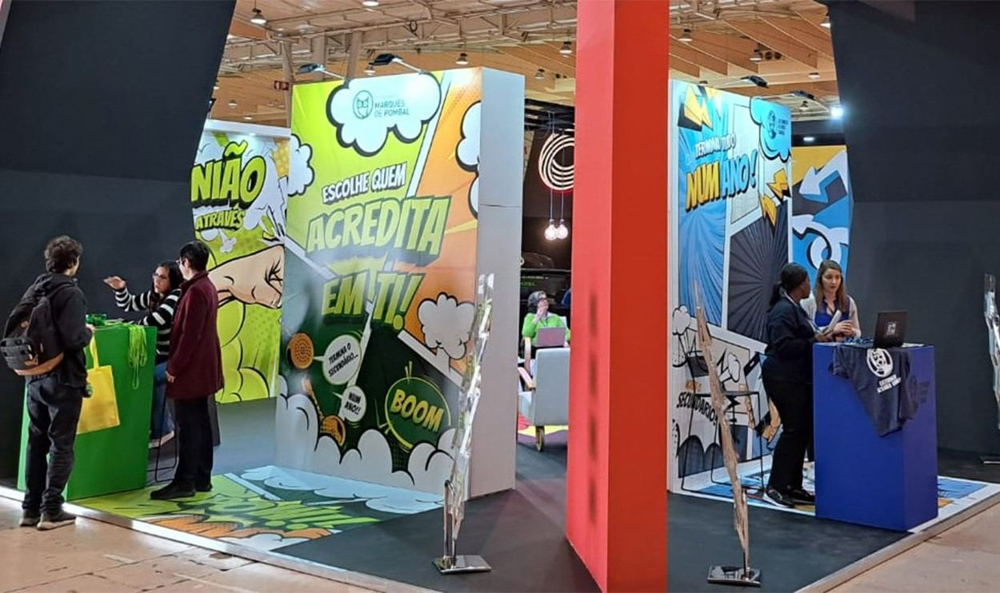

Conferences · Education
Futurália 2027
- Dates
- –
- Venue
- FIL – Feira Internacional de Lisboa, Lisbon
- Location
- Lisbon, Portugal
- Format
- In-person
- Category
- Education
- Industry
- Education fair
- Organiser
- FIL – Feira Internacional de Lisboa
- Official website
- https://futuralia.fil.pt/
About
Dates are local to the host city (Western European Time, UTC+0 / UTC+1 in summer).
Topics: education, higher education, careers, youth.
No organiser attendance figure found on the official pages fetched 24 Nov 2026. Ranked by our estimated size tier 'large' (30,000-100,000 attendees/visits), a judgement from format, venue and scale, not an official number.
Sources
- Official — https://futuralia.fil.pt/
Hotels
- Eurostars Universal Lisboa — 5★ · Avenida D. João II, Lote 1.12.01-Parque das Nações, 1990-221 LISBOA · 0.8 km from the venue · Price on request
- Hotel Real Palácio — 5★ · Rua Tomás Ribeiro, N.º 115, 1050-228 Lisboa · 6.5 km from the venue · Price on request
- Luster Hotel — 5★ · Avenida Casal Ribeiro 48, 1000-091 LISBOA · 5.9 km from the venue · Price on request
- Myriad by SANA Hotels — 5★ · Cais das Naus, 2.21.01, 1990-173 Lisboa · 0.6 km from the venue · Price on request
- Sheraton Lisboa Hotel & Spa — 5★ · Rua Latino Coelho, 1, 1069-025 Lisboa · 6.3 km from the venue · Price on request
- Vip Grand Lisboa Hotel & Spa — 5★ · Avenida 5 de Outubro n.º 197, 1050-054 LISBOA · 5.7 km from the venue · Price on request
- Hotel Olissippo Oriente — 4★ · Av. D. João II, Lt. 1.03.2.2, 1990-083 Lisboa · 0.6 km from the venue · Price on request
- Hotel Tivoli Oriente — 4★ · Av. D. João II, 27 - Parque Nações, 1990-083 Lisboa · 0.5 km from the venue · Price on request
- Meliá Lisboa Oriente — 4★ · Av. D. João II, Lote 1.1602.B Parque das Nações, 1990-083 Lisboa · 0.4 km from the venue · Price on request
- Vip Executive Art´s Hotel — 4★ · Av. D. João II, 47, 1998-028 Lisboa · 0.5 km from the venue · Price on request
Venue
- FIL – Feira Internacional de Lisboa — Exhibition grounds · Rua do Bojador, Parque das Nações, 1998-010 Lisbon